Product strategy
Discovery, roadmaps, prioritisation and cross-functional delivery. Turning user needs into clear specifications and measurable releases.
PRODUCT OWNER & DIGITAL BUILDER
My toolkit, in motionShopify · n8n · HubSpot · GitHub · Mirakl · Erplain · Pennylane · Gemini · Stripe · Cloudflare · Cisco · AWS · SAP · Google Ads · Meta Ads · Semrush · Trello · Microsoft Office · Python · MySQL · Brevo · JavaScript · Apify · Power BI
An engineer by training, a Product Owner by conviction. I connect strategy, technology and operations to build commerce platforms, B2B tools and useful automations. From discovery to delivery, I focus on one outcome: making work simpler for the people behind it.
REAL PRODUCTS. CONNECTED SYSTEMS.
HOW I CAN CONTRIBUTE
Discovery, roadmaps, prioritisation and cross-functional delivery. Turning user needs into clear specifications and measurable releases.
Shopify Plus platforms, wholesale journeys and marketplace ecosystems. One connected experience from the catalogue to fulfilment.
APIs, webhooks and n8n workflows connecting ERP, CRM, logistics and invoicing. Less repetitive work, more reliable operations.
Prospecting assistants, customer-support knowledge bases and purpose-built web tools. Practical AI anchored in real workflows.
Engineering depth, risk analysis and continuous improvement. Bringing automotive and medical-device discipline to digital products.
Discovery interviews, roadmap ownership, RICE / MoSCoW prioritisation, user stories, acceptance criteria, agile rituals and outcome KPIs.
Shopify Plus B2B, custom Liquid themes, Mirakl product feeds, Erplain stock mapping, Colissimo logistics and Pennylane invoicing.
n8n, REST APIs, webhooks, TypeScript, Node.js, Python and Git. Relational models, SQL queries and stored procedures in MySQL / PostgreSQL.
HubSpot, Brevo and Sidely workflows; firmographic scoring, Google / Meta Ads, Semrush SEO and Cloudinary media optimisation.
FMEA / AMDEC, 8D, lessons learned, Lean 5S and DMAIC; functional QA and release validation. Experience with ISO 9001 / 14001 / 27001 / 17025 and IATF 16949 frameworks.
Customer-question knowledge bases, intent classification, lead enrichment and scoring, diagnostic assistance and Claude Code workflows.
FROM NEED TO ADOPTION
Understand before building. Measure before concluding.
Quality engineering taught me to investigate root causes, document decisions and validate with evidence. I bring that discipline to product work.
Discover
Interview users, map the real workflow and identify operational constraints before writing a user story.
Interviews · Workflow mapping
Prioritise
Use business value and user impact to choose what deserves a place in the roadmap. RICE and MoSCoW make those choices explainable.
RICE / MoSCoW · Prioritised backlog
Deliver
Align stakeholders, write clear specifications and acceptance criteria, and lead the agile rituals that keep delivery moving.
User stories · Acceptance criteria
Learn
Define success metrics during framing, follow adoption and usage, then refine the product through continuous iteration.
Outcome KPIs · Adoption · Iteration
PRODUCT / COMMERCE / ENGINEERING
Product thinking. Engineering depth. Real-world impact.
SHOPIFY PLUS / B2B / AUTOMATION
Owning the rebuild of ffaperitif.com: a Shopify Plus platform, ERP synchronisation, five marketplace partners and a zero-touch fulfillment workflow.
An ageing WordPress storefront and fragmented operations: orders copied between systems, shipping labels created manually and invoices entered one by one.
Product discovery, roadmap ownership and prioritisation; aligning engineering, operations and marketplace stakeholders from specification to release.
A Shopify Plus B2B/B2C rebuild with Erplain inventory sync, Mirakl integrations and an n8n workflow connecting orders, shipping and invoicing. URL redirects and canonical mappings were preserved through the migration.
Company accounts, customer-specific prices, draft orders and deferred payment terms. Real-time stock mapping across 367 SKUs, with recurring orders and seasonal bundles.
AstoreShop (Accor), Nature & Découvertes, Veepee, Ankorstore and Kviste: catalogue onboarding, product taxonomy, variant mapping, pricing rules and channel-specific quality checks.
An adapted open-source AI chatbot uses a knowledge base built from customer questions and routes conversations by intent and urgency. Kwanko adds affiliate tracking, commission structures and publisher activation.
A Google Maps / Places relay-point selector connects checkout choices to Colissimo labels. Server-side analytics tagging, field-level API mapping and payload validation support reliable downstream workflows.
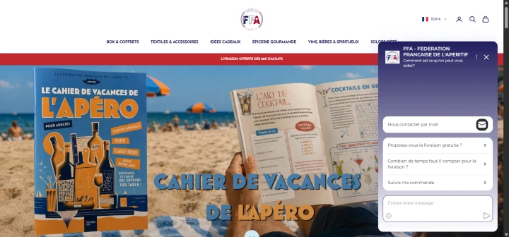
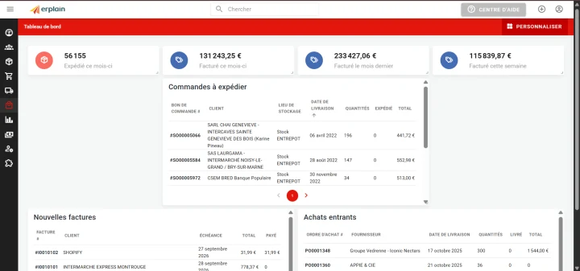
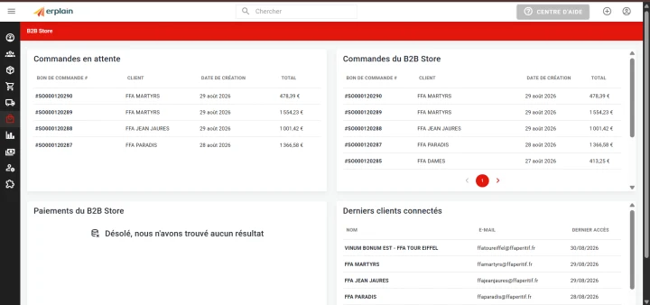
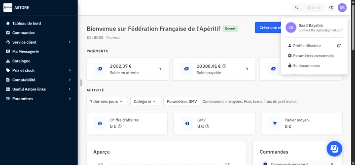
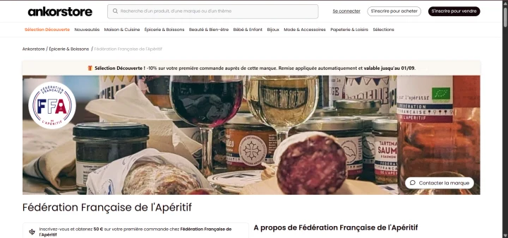
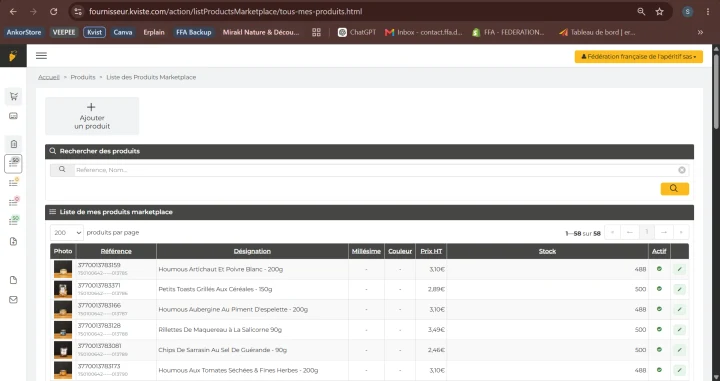
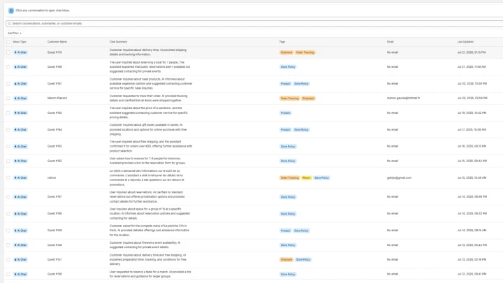
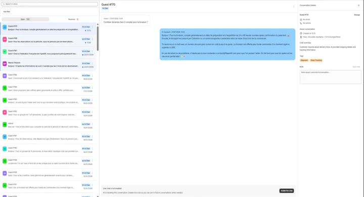
B2B / SAAS / TYPESCRIPT
A B2B prospecting platform you can pilot through a conversation with its Gemini-powered copilot: research accounts, prepare outreach and coordinate specialised agents.
Describe your goal to the copilot in natural language. It uses page context to guide prospect research, qualify records, prepare campaigns and coordinate specialised agents. Proposed data changes are presented before application. The conversational intelligence uses the Google Gemini API.
Scattered prospect data, repetitive qualification and disconnected outreach make B2B prospecting slow and inconsistent.
Public-source company discovery, traceable enrichment and contact verification, a Kanban pipeline and outbound sequences. Built with Next.js, TypeScript and PostgreSQL, with an Expo mobile app and Chrome extension.
Visit LeadHuntThe earlier workflow described on my portfolio connected public company sources, Apollo and LinkedIn research to n8n, Brevo sequences and HubSpot. The current SaaS extends this into organisation-based prospecting, contact verification and outbound tools.
Hunter, Apollo and Kaspr are configurable connectors using the organisation’s own account. LinkedIn profiles are captured through the LeadHunt extension.
Service availability depends on the configured organisation and provider accounts.
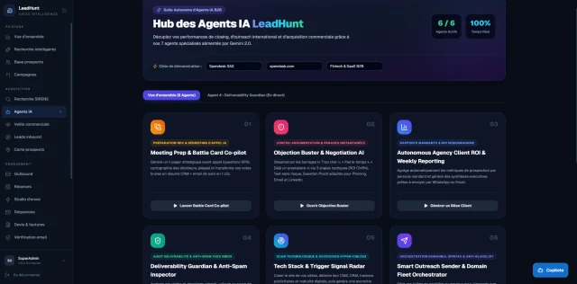
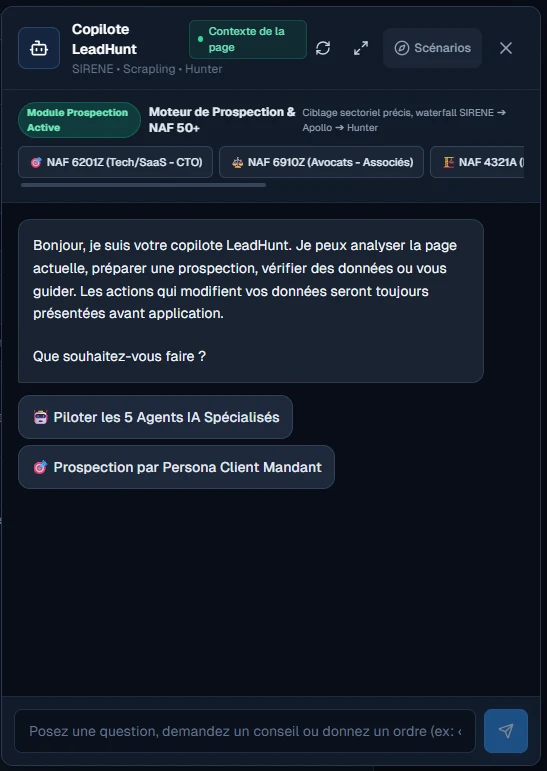
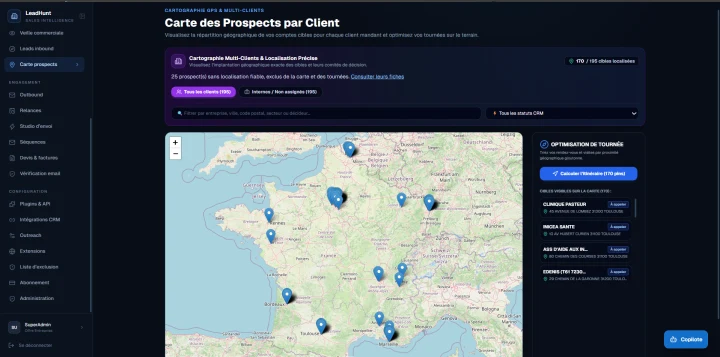
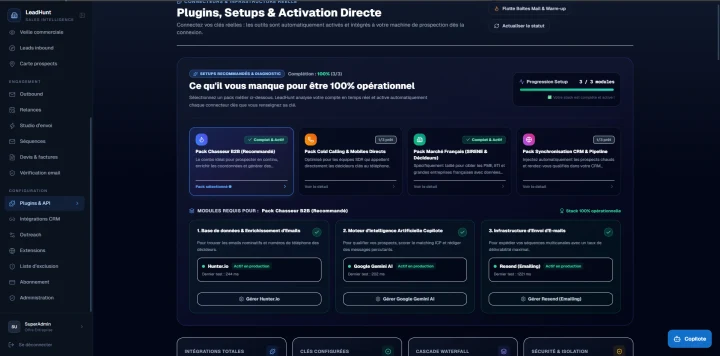
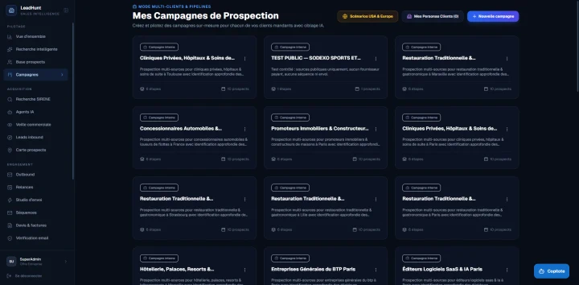
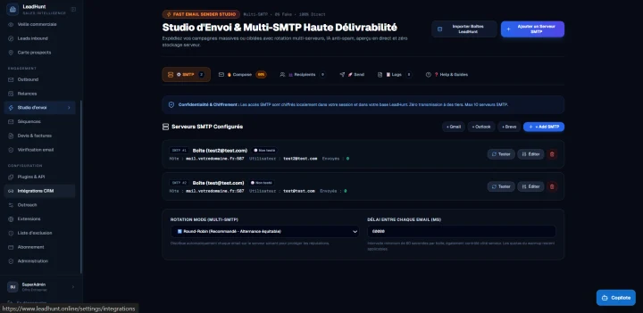
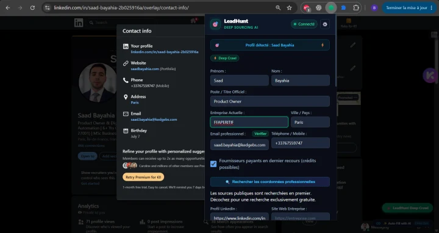
AUTOMOTIVE / WEB & MOBILE
CardiagGuided vehicle diagnosis for buyers, owners and mechanics — even without mechanical knowledge. Model-specific checks and a detailed PDF support pre-purchase inspections and a lasting vehicle record.
33 checks across seven technical sections guide users through vehicle documents, the engine, chassis and other inspection areas. Plain-language steps help people with little automotive knowledge know what to observe and record. Progress measures completed checks, rather than certifying vehicle reliability.
The extensive catalogue covers 201 makes and 2,697 model entries, with generations and engine variants. Documented recurring problems highlight symptoms to look for, affected components, usual mileage ranges and indicative costs, with guidance on the next checks for the selected vehicle.
The conversational agent, powered by the Google Gemini API, asks targeted questions and combines the vehicle context with symptoms, observations and fault codes. It helps narrow down likely root causes and prepare checks, with indicative repair costs and labour times refined through measurements and workshop inspection.
Generate a detailed vehicle inspection sheet in PDF format, bringing together vehicle identification, completed checks, recorded observations, photos and points requiring attention. Use it as a practical pre-purchase checklist or keep it with the vehicle record to preserve traceability of its condition and subsequent inspections.
A shared Expo web/mobile app combines guided inspections, local vehicle records, Firebase account sync and workshop operations. Inspection reports, quotes and invoices can be exported as PDFs.
History reports and parts sourcing currently use external links and manual records. Partner API access and Stripe activation remain configuration milestones.
Conversational diagnosis · Gemini API
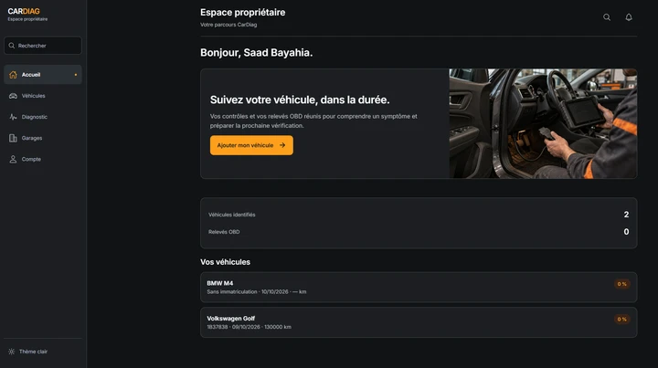
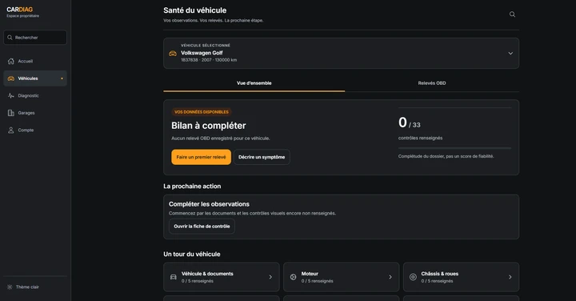
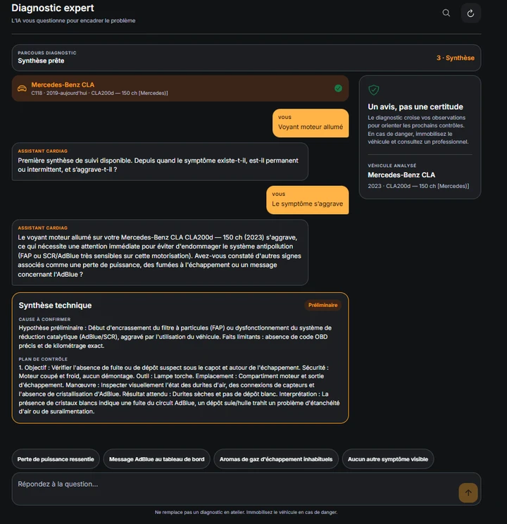
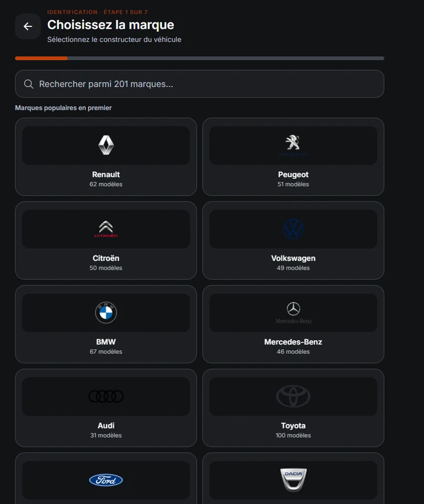
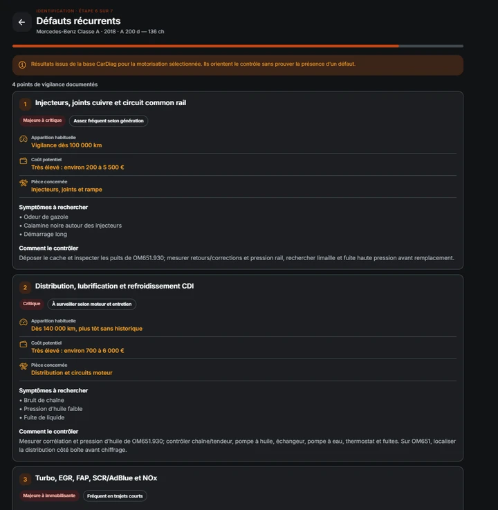
MOBILE / ASSISTANCE PROTOTYPE
A first-aid assistance prototype exploring triage, offline guidance, consent and a responder's route.
Phase-one prototype with a demo mode and embedded tutorials. The product is an assistance concept, not a replacement for emergency services. Deployment and real-world validation remain separate milestones.
Consent is recorded before location use. Offline tutorials are bundled; responder navigation opens Waze, Google Maps or Apple Maps. SMS and critical notifications remain future work.
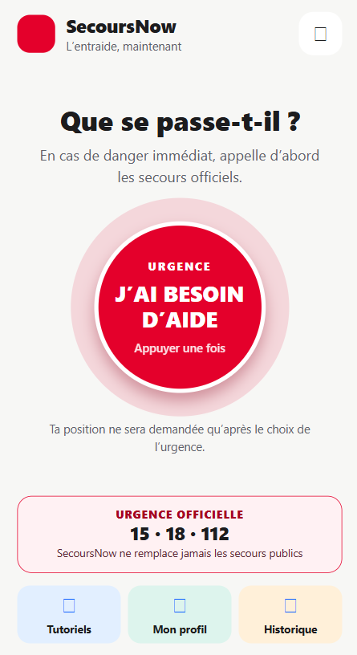
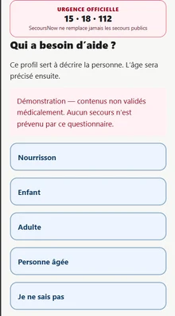
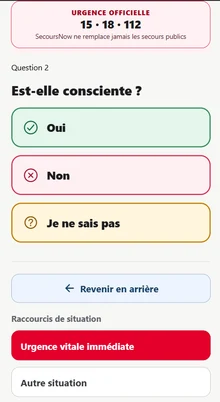
NETWORKING / PRE-LAUNCH
Professional profiles, a contact directory and QR-based portfolio exchange for networking.
A professional contact product with published profiles, private notes and data export. The launch preparation covers accessibility and data rights; event features remain on the V2 roadmap.
QR and vCard sharing, consent-based public profiles, private contact notes and JSON export/deletion. The assistant extracts PDF/DOCX CV text into structured profile data. Event management is on the V2 roadmap.
Profiles, contacts and private notes
PRODUCTIVITY / OPEN-SOURCE ADAPTATION
A private career workspace combining role tracking, résumé drafts and an evidence-backed application pipeline.
Adapted from the open-source career-ops project with company career-page tracking, a résumé studio and owner-only access. The workflow prepares decisions; it does not automatically submit applications.
Original open-source projectTracks company career pages and matches role keywords. The résumé studio keeps private drafts, previews and PDF/HTML exports. Its completeness checklist is explainable; applications and outreach stay manual.
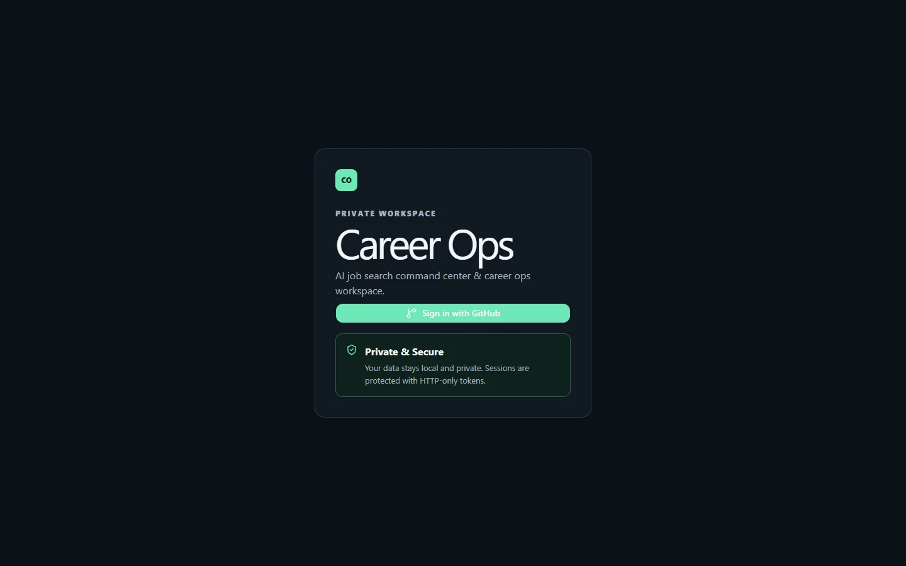
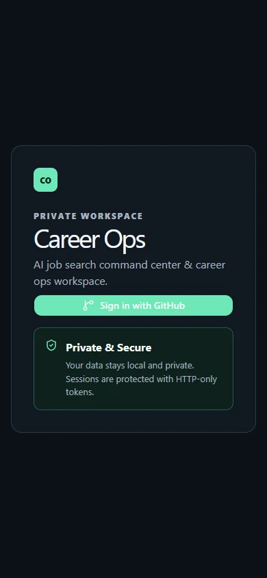
AI / LOCAL AUTOMATION
A personal Windows copilot connecting a private Telegram interface to local tools and configurable inference.
Text, photos and CPU-transcribed voice can drive local tools. Named webhooks, a bounded repair loop and an audit journal support the workflow; an external model API is optional.
A private interface for local workflows
 Telegram
TelegramB2B / HACKATHON PROPOSAL
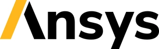
Ansys — AI-augmented simulationA B2B proposal for Dassault Aviation use cases: accelerate simulation iterations while retaining certified physics solvers, expert validation and on-premise data control.
1st prize · Innovative Project
AeroSignal AI: electromagnetic antenna integration. AeroShape AI: aerodynamic geometry screening. Aero Twin Ops: maintenance and reduced-order models. Sovereign Secure AI: on-premise deployment and a persona-based go-to-market strategy.
Rafale and Falcon cases frame the proposal. Uncertain predictions return to rigorous solvers and human experts; this is a hackathon commercial concept.
A commercial concept with expert validation
DTC / ENTREPRENEURSHIP
Building and scaling Shopify storefronts with full P&L ownership, multi-channel acquisition and a remote team in the Philippines.
Product sourcing and supplier negotiations, margin and advertising-spend management, custom Liquid storefronts, conversion funnels and checkout optimisation. Acquisition combines Google Ads, Meta Ads and SEO with Semrush.
A Philippines-based remote team works through asynchronous workflows, KPI dashboards and content pipelines. Subscription engines, recurring orders and seasonal bundle creation support retention and repeat purchasing.
From sourcing to repeat purchase
MARKETPLACE / WEB & ANDROID
A web/Android marketplace for time-sensitive object collection, bundles and donations, with nearby search and real-time messaging.
Time-limited listings, bundles and donations; proximity search and Socket.IO chat. Public locations are rounded, pickup addresses stay private and photos use signed S3-compatible uploads. Payments remain a possible V2 feature.
Give objects a second life, locally
SYSTEMS / ENGINEERING
Practical systems and DevOps work, from Linux administration to automated deployments.

Shell automation, Linux administration, networking, Nginx reverse proxies, containers and deployment workflows.
Automation, networking and system operations
ENGINEERING / STUDIES & PROTOTYPES
Six engineering studies spanning traceability, QHSE, simulation, IoT, security and recommendation systems.
Six explorations across engineering disciplines
EXPERIENCE / EDUCATION / CONTINUING DEVELOPMENT
From engineering foundations to product ownership.
Professional experience
PRODUCT / COMMERCE
Connecting product priorities, commerce platforms and B2B operations.
2025 — Present
Product Owner · E-Commerce & B2B
Platform discovery and backlog ownership; cross-functional delivery of the Shopify Plus rebuild, ERP integration, marketplace onboarding and logistics automation.
Explore the FFA projectQUALITY / PROCESS
Turning operational feedback into clearer processes and continuous improvement.
2023 — 2025
Quality & Process Optimisation
Feedback loops and root-cause analysis translated operational friction into improvement requirements, with process mapping and Lean methods to reduce waste and lead times.
SOFTWARE / QUALITY
Bridging customer support and development through software quality.
2022 — 2023
QA & Business Support
Technical-ticket analysis, systemic bug diagnosis, functional test plans and release verification, connecting customer support and development teams.
ENGINEERING / QHSE
Applying risk analysis and QHSE practices to medical-device operations.
2020 — 2022
QHSE Engineer · Medical Devices
Risk mapping, contractor QHSE audits, chemical-safety oversight and cross-departmental process improvement.
ENGINEERING / AUTOMOTIVE
Combining production quality, preventive methods and document traceability.
2018 — 2019
Quality Engineer · Automotive
FMEA-based production anomaly analysis and preventive workflows, plus a digital archive improving document traceability and retrieval.
EARLY EXPERIENCE / SYSTEM AUDIT
Assessing information-system security and prioritising remediation.
Early professional experience
Information-system audit
Organisational and technical security assessment, ISO 27001 gap analysis and a progressive remediation roadmap.
EARLY EXPERIENCE / WEB & QA
Developing and testing an internal portal for employee workflows.
Early professional experience
Web development & QA
An internal employee portal, functional test plans and validation environments, with SQL stored procedures for backend operations.
Education & qualifications
BUSINESS / DUAL QUALIFICATION
Double degree: MSc Business Engineer & Master Ingénieur d’Affaires
Connecting technology, client needs and business value through B2B strategy, complex solution selling and project management.
Programme overview covering the common curriculum; specialisation modules depend on the chosen pathway.
DIGITAL / BUSINESS & DATA ANALYST TRACK
Business & Data Analyst track · KEDGE–ISEN partnership
A digital track taught by the engineering school alongside KEDGE studies, connecting business analysis, data visualisation and cloud fundamentals.
The partnership describes a track leading to an ISEN certificate, distinct from the engineering degree. Certification preparation does not imply certification has been awarded.
QUALITY / MASTER’S
Master’s in Quality & Performance Management
A bridge between statistical methods, quality systems and organisational performance, with a focus on continuous improvement.
Curriculum summarised from the historical QMP qualification framework (RNCP 17136).
COMPUTER SCIENCE / DUAL DEGREE
Bachelor’s in Computer Engineering · dual degree
Computer science foundations combining programming, information systems, databases and networks through the Université Internationale de Rabat–Université de Nantes partnership.
Overview based on the historical UIR licence catalogue; final-year electives vary between the Computer Science and MIAGE pathways.
Certifications & continuing education
CONTINUING EDUCATION / CROSS-DISCIPLINARY
Continuing education spanning commerce, cybersecurity, sales, process improvement and AI workflows.
LANGUAGES / COLLABORATION / MOBILITY
Connecting teams across borders.
Based in Paris. Open to hybrid work, remote collaboration and international mobility.
Category B licence · Personal vehicleNative / bilingual
Discovery workshops, stakeholder alignment and executive reporting.
Professional · C1 / C2
Technical specifications, international teams and cross-border suppliers.
Native / bilingual
Regional partnerships, business negotiation and multicultural projects.
Elementary · A2
Everyday conversations and understanding basic professional documents.
CURIOSITY / PRECISION / FIELD EXPERIENCE
Different environments. The same curiosity.
INDEPENDENT EXPLORATION
Planning routes, managing logistics and adapting to the unexpected. Across Europe, North Africa, the Caucasus and Southeast Asia.
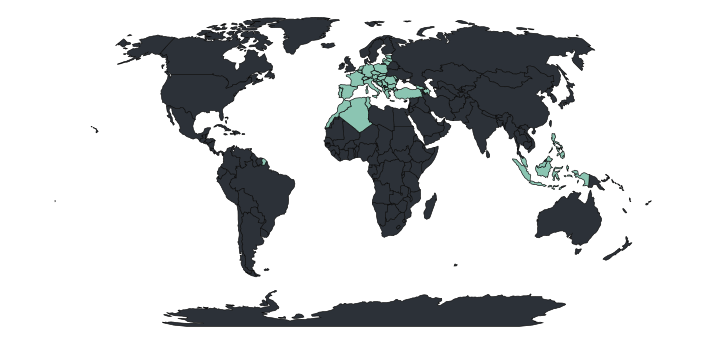
Spain · Portugal · France · Germany · Netherlands · Belgium · Switzerland · Italy · Austria · Czech Republic · Poland · Slovakia · Hungary · Slovenia · Croatia · Bosnia & Herz. · Montenegro · Serbia · North Macedonia · Albania · Greece · Turkey · Bulgaria · Romania · Moldova · Estonia · Latvia · Lithuania
Morocco · Algeria · Tunisia
Azerbaijan · Georgia
Malaysia · Indonesia · Philippines
AVIATION
Private-pilot (PPL) training: navigation, weather, checklists and decisions under time constraints.
MOTORSPORT
Rally safety marshal: securing events, radio communication and handling incidents within strict protocols.
HANDS-ON ENGINEERING
Personal vehicle restoration and preparation: VAG TFSI/TDI engines, a Mercedes CL600 V12, a BMW 335d and a Lexus IS200 / 1JZ-GTE drift project.
SIMULATION
Simracing, telemetry and vehicle dynamics: exploring weight transfer and trajectory control through simulation.
LET’S CONNECT
PARIS / FRANCE & REMOTEGood products start with a conversation.
Available immediately for a permanent product role · Paris, hybrid, remote or relocation.